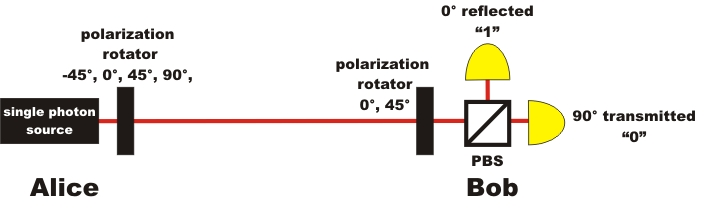

The demonstration experiments are sponsored by the NaT-Working project of the Robert Bosch Foundation.
Quantum Cryptography
Overview
Cryptography is the art of encoding a message so that it becomes unreadable and devoid of any information content for third parties. The secure transmission of confidential information has always been a basic need of each and every society. The earliest evidence for the encoding of documents can be found in ancient Egypt. In the Middle Ages, several cryptographs were in use to guard correspondence. During World War II, electro-mechanical processes, like e.g. Enigma, were employed to transmit confidential war information. In today's computer-based data traffic, mathematical encoding methods like the Public Key System are used. The security of the encoding rests upon mathematical algorithms. A very enjoyable overview of the historical race of code developers and code breakers can be found in the book by S. Signh [Sig01] or A. Beutelsbacher [Beu07].
Despite varied and often secret military research, there is to this day no classic cryptography system available which offers complete security in practical use. Quantum physics offer a way out of this dilemma. With the help of individual quanta, information can be transmitted 100% securely. The security of quantum cryptography does not rest on mathematical processes, but on the basic laws of quantum physics. Some early quantum cryptography systems are already available commercially [IdQ08] and are e. g. standardly employed in Switzerland for transmitting important information [Pat07].
| Basics: | |
Chapter 1: |
Encoding with the One-Time-Pad |
Chapter 2: |
Code distribution with single photons |
Chapter 3: |
Code distribution with detection of a spy |
| Advanced: | |
Chapter 4: |
Process, research and single photon source in quantum cryptography |
Chapter 5: |
Quantum cryptography with entangled photon pairs |

Experimental set-up for quantum cryptography with single photons
The demonstration experiments are sponsored by the NaT-Working project of the Robert Bosch Foundation.